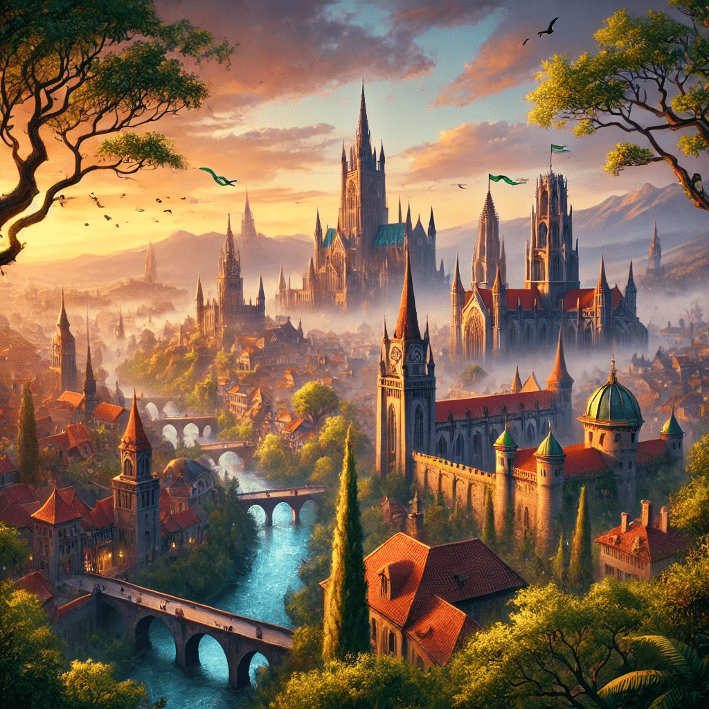
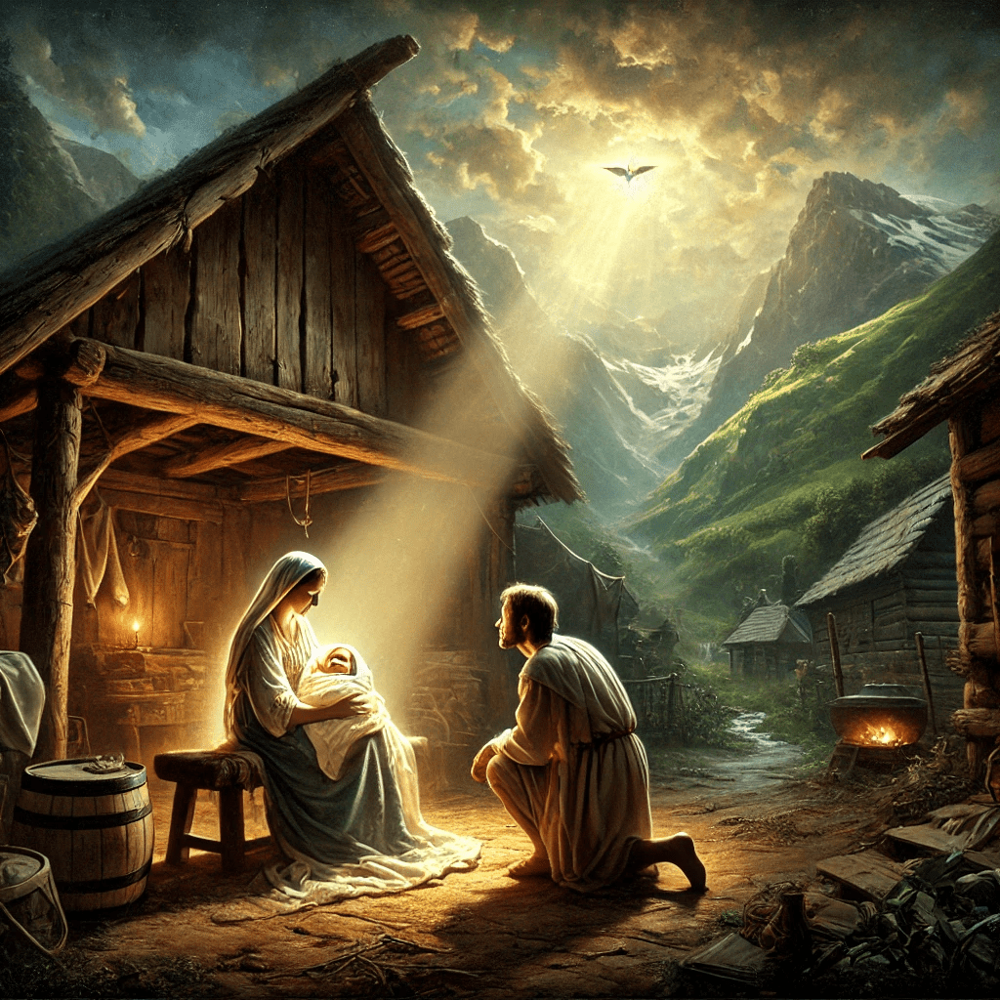

Bienvenido a nuestra página web. Aquí puedes encontrar información sobre nuestros proyectos y más.
Verdantia es la capital del Reino de Verdant, situada en el continente de Terravalor. Conocida por su riqueza natural, arquitectura magnífica, y una vibrante historia cultural, Verdantia es un centro de comercio, política y conocimiento en la región.
La ciudad de Verdantia fue fundada hace más de mil años por los primeros colonos del Reino de Verdant, atraídos por la fertilidad de sus tierras y la abundancia de recursos naturales. Se estableció inicialmente como un pequeño asentamiento agrícola a orillas del río Silvena, cuya corriente proporcionaba agua fresca y tierra fértil para la agricultura.
La ciudad fue creciendo a medida que más colonos llegaron, desarrollándose rápidamente gracias a su ubicación estratégica cerca de rutas comerciales clave y recursos como la madera, el agua y minerales. A mediados del siglo IV del calendario local, Verdantia se había convertido en un importante centro de comercio y gobierno, atrayendo a comerciantes y artesanos de toda la región.
Durante la Edad Media de Verdantia, la ciudad experimentó una rápida expansión. El rey Eadric I, conocido como el Fundador, fue fundamental para el desarrollo de la infraestructura de la ciudad, incluyendo la construcción de las murallas exteriores y los primeros caminos pavimentados. Bajo su reinado, Verdantia también se convirtió en un centro cultural, con la fundación de academias de arte y estudios literarios que atrajeron a eruditos de todas partes.
En el siglo VII, durante el reinado de la reina Linnea II, Verdantia se convirtió en la capital oficial del Reino de Verdant, consolidando su importancia política. La reina Linnea fue responsable de la construcción del Palacio de la Corona, que sigue siendo la residencia oficial de la familia real hasta el día de hoy.
En el siglo X, Verdantia fue gravemente afectada por la Guerra de los Reinos, una serie de conflictos entre los estados vecinos que luchaban por el control de los recursos de Terravalor. Durante la guerra, Verdantia sufrió varios ataques y fue parcialmente destruida, incluyendo el saqueo del Palacio de la Corona y la destrucción de parte de sus murallas.
Tras el final de la guerra, se llevó a cabo un ambicioso proyecto de reconstrucción bajo el reinado del rey Leor III. Este periodo vio la reconstrucción de las murallas de la ciudad y la modernización de su infraestructura. También se establecieron nuevas instituciones, como la Universidad de Verdantia, que se convirtió en un centro de conocimiento y aprendizaje en el reino.
En la era moderna, Verdantia se ha mantenido como un faro de estabilidad y prosperidad en el Reino de Verdant. Durante la Gran Guerra de Terravalor, la ciudad se convirtió en el corazón de la resistencia contra las fuerzas invasoras de Ravengarde. A pesar de los numerosos asedios y ataques, la ciudad resistió y jugó un papel clave en la eventual victoria de la Alianza de la Espada Verde.
Después de la guerra, Verdantia se embarcó en un nuevo período de desarrollo, con inversiones en tecnología, comercio y cultura. La ciudad se ha expandido más allá de sus murallas originales, incorporando nuevos distritos y mejorando su infraestructura para adaptarse al crecimiento de la población y las necesidades modernas.
Descripción detallada de la historia del Lucianismo...
Prólogo: El Surgimiento del Héroe
1.1 El Origen de la Luz y la Oscuridad
1. En los días antiguos, cuando la tierra aún no conocía la sombra del mal, los hombres vivían en paz, y la creación del Creador florecía bajo la luz del sol. 2. Mas en el silencio de los abismos, una fuerza oscura despertó, y su nombre era Malakar, el Oscuro. 3. Nacido del odio y de la desesperanza, Malakar se levantó desde las profundidades, trayendo consigo el terror y la destrucción. 4. Y su sombra se extendió por los reinos de los hombres, corrompiendo todo lo que tocaba. 5. Los cielos se oscurecieron, y la luz se desvaneció, pues Malakar era como una llama de oscuridad, que consume toda esperanza.
6. Y los hombres clamaron al Creador, pidiendo auxilio, pues no podían soportar la maldad de Malakar. 7. Y el Creador, en su infinita misericordia, escuchó sus súplicas y preparó un camino para la redención. 8. Y en los corazones de los sabios, plantó una visión, un sueño profético que anunciaba la venida de un salvador. 9. Y así estaba escrito: "En tiempos de gran oscuridad, cuando el mundo se encuentre sumido en la desesperación, se levantará un Redentor. 10. Él será luz en medio de las tinieblas, y con su fuerza y su pureza, desterrará la sombra y restaurará la paz en la tierra."
Capítulo 1: Los Primeros Años de Lucian
1.1 Nacimiento y Origen
1. En los días cuando la luz aún brillaba pura y sin mancha sobre la tierra, y el mal de Malakar aún no había oscurecido los corazones de los hombres, sucedió que en una aldea humilde, a los pies de las montañas verdes, nació un niño al que llamaron Lucian. 2. Y su nacimiento fue como un susurro del Creador, sin trompetas ni grandiosidad, en la quietud de una noche iluminada por una estrella solitaria, que resplandecía con una luz suave y bendita sobre el lugar de su nacimiento.
3. Y los padres de Lucian, Erath y Elara, eran justos ante los ojos del Creador, caminando en todos los caminos de la rectitud y la humildad. 4. Y dijeron: "Este niño es un don del Altísimo, y en él pondremos toda nuestra esperanza, para que crezca en bondad y sabiduría, y sea como una luz en estos tiempos de incertidumbre."
5. Y creció Lucian entre los campos verdes y los ríos cristalinos de la aldea de Verdant, amado por todos y conocido por su bondad y compasión. 6. Pues desde su infancia, su corazón fue inclinado hacia la justicia y la misericordia, y su mano siempre se extendía hacia los necesitados, compartiendo su pan con los hambrientos y consolando a los que sufrían.
7. Y cuando los ancianos de la aldea lo veían, decían entre ellos: "Bendito sea este niño, pues en él vemos la promesa de un nuevo amanecer, una luz que no se apagará mientras haya justicia en la tierra." 8. Y todos los que lo conocían veían en Lucian un reflejo de la pureza y la virtud que alguna vez reinó en el corazón de los hombres.
1.2 La Marca del Héroe
9. Y aconteció en aquellos días, cuando Lucian era aún un niño, que una manada de lobos descendió de las colinas sobre los rebaños de la aldea. 10. Y los pastores, al ver la ferocidad de los lobos, huyeron aterrorizados, dejando atrás a las ovejas y a los corderos para que fueran presa de las bestias.
11. Mas Lucian, viendo el peligro que acechaba, no huyó como los demás, sino que, armado solo con un cayado y una piedra, se enfrentó a los lobos con un valor que no era común en los hombres de su edad. 12. Y dijo en voz alta: "¡Oh, lobos de la oscuridad, no temeréis a un niño, mas temed a la luz del Creador que mora en él! Pues protegeré a estos inocentes con toda la fuerza que Él me ha dado."
13. Y con un corazón lleno de fe y coraje, Lucian se lanzó contra los lobos, y al ver la luz que emanaba de sus ojos, las bestias, llenas de temor, huyeron de su presencia, pues sentían que el Creador estaba con él. 14. Y ningún lobo se atrevió a volver a los prados de Verdant mientras Lucian estuvo allí.
15. Y cuando los aldeanos supieron de esta hazaña, vinieron a él maravillados y dijeron: "Verdaderamente, este niño es elegido por el Creador, pues con su fe y valentía ha puesto en fuga a los lobos y ha salvado a nuestros rebaños." 16. Y desde aquel día, Lucian fue conocido no solo por su bondad, sino también por su fuerza y su valor.
17. Y creció Lucian en sabiduría y estatura, y en gracia para con el Creador y con los hombres. 18. Y todos los que lo veían decían: "Este joven será grande entre nosotros, pues la luz del Creador brilla intensamente en él, y su camino está destinado a ser una guía para todos los hombres."
19. Así pasaron los años, y Lucian continuó caminando en los caminos de la rectitud y la justicia, siempre guiado por la luz interior que el Creador había plantado en su corazón desde su nacimiento. 20. Y aunque aún no conocía su destino, el Creador lo estaba preparando para la gran obra que había de realizar, para la redención de todos los hombres.
21. Y así concluye el primer capítulo de los días de Lucian, el hijo de Verdant, en quien la esperanza del Creador fue depositada para ser luz en medio de las tinieblas. 22. Y el pueblo aguardaba, sabiendo que el día vendría en que la verdadera misión de Lucian sería revelada, y la oscuridad que se avecinaba sería enfrentada por la luz que nunca se extingue.
2.1 La Llamada a la Aventura
1. Y cuando Lucian alcanzó la juventud, comenzó a sentir en su corazón el peso de un destino que aún no comprendía por completo2.Pues en sus sueños, veía visiones de un gran mal que se extendía por la tierra, devorando la luz y la esperanza de los hombres.
3. Y en medio de estas visiones, una voz suave y poderosa le susurraba: "Levántate, Lucian, pues eres el elegido para enfrentar la oscuridad y restaurar la paz."
4. Y aunque Lucian no entendía completamente el significado de estos sueños, sabía que eran un llamado del Creador.5. Así que se dirigió a los ancianos de Verdant, buscando consejo y sabiduría.
6. Y los ancianos, al escuchar sus palabras, reconocieron en ellas las señales de la profecía que había sido transmitida de generación en generación.7. Dijeron entonces: "Lucian, hijo de Erath y Elara, tu camino está trazado por el Creador. Debes partir hacia el este, hacia las montañas de Thalor, donde encontrarás al sabio Elion, quien te guiará en tu misión."
8. Y Lucian, lleno de determinación, se preparó para dejar su hogar, sabiendo que el camino sería arduo y peligroso.9. Tomó solo lo necesario: su cayado, un manto tejido por su madre y un pequeño paquete de provisiones. 10. Y antes de partir, se arrodilló ante el altar del Creador y oró por fuerza y claridad, diciendo: "Oh Creador, guía mis pasos y otórgame la sabiduría para cumplir tu voluntad."
11. Y con el amanecer, Lucian se despidió de su familia y amigos, quienes lo vieron partir con lágrimas en los ojos pero con fe en sus corazones.12. Y así comenzó el viaje de Lucian, no solo hacia tierras lejanas, sino hacia su propio destino, guiado siempre por la luz que brillaba dentro de él.
2.2 Las Pruebas del Camino
13. Y mientras Lucian avanzaba hacia las montañas de Thalor, se enfrentó a muchas pruebas que pondrían a prueba su fe y su fortaleza.14.Primero, atravesó el Bosque de los Susurros, un lugar lleno de sombras y voces engañosas que buscaban confundirlo y desviarlo de su camino.15.Mas Lucian, recordando las enseñanzas de su padre, cerró sus oídos a las voces del engaño y siguió adelante, confiando en la guía del Creador.
16. Al salir del bosque, se encontró con el Río de las Lágrimas, cuyas aguas eran amargas y profundas, reflejando los lamentos de aquellos que habían perdido toda esperanza. 17.Y mientras contemplaba cómo cruzar el río, apareció ante él una figura vestida de blanco, que decía ser un mensajero del Creador.18. Mas Lucian, desconfiando de su presencia, pidió al Creador una señal de verdad. 19. Y en ese instante, el río se partió en dos, dejando un camino seco para que Lucian pudiera cruzar. 20. Y la figura se desvaneció, mostrando que era una ilusión de Malakar para hacerle dudar.
21. Más adelante, Lucian llegó a un desierto interminable, donde el sol ardiente y las arenas movedizas amenazaban con consumir su fuerza y su esperanza.22.Y durante muchos días y noches, caminó sin descanso, sus labios resecos y su cuerpo agotado.23.Pero cada vez que se sentía al borde del colapso, una suave brisa le traía recuerdos de Verdant y las palabras de su madre, fortaleciendo su voluntad de seguir adelante.
24. Finalmente, después de muchas semanas de viaje, Lucian llegó a las Montañas de Thalor, donde el sabio Elion lo estaba esperando.25. Y Elion, al verlo, sonrió y dijo: "Bienvenido, Lucian. El Creador ha hablado de ti y de tu llegada. Aquí aprenderás lo que necesitas para cumplir tu destino."
26. Y así, Lucian se preparó para las enseñanzas de Elion, sabiendo que cada lección lo acercaría más a su misión final de enfrentar y derrotar a Malakar, el Oscuro.
2.3 El Encuentro con Malakar
28. Y después de muchos días de aprendizaje bajo la guía de Elion, Lucian se sintió listo para enfrentar su destino...
Otra información relevante sobre el Lucianismo...